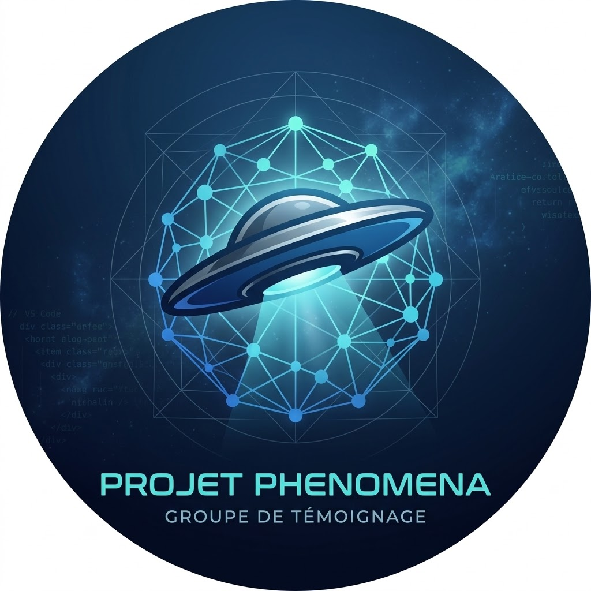
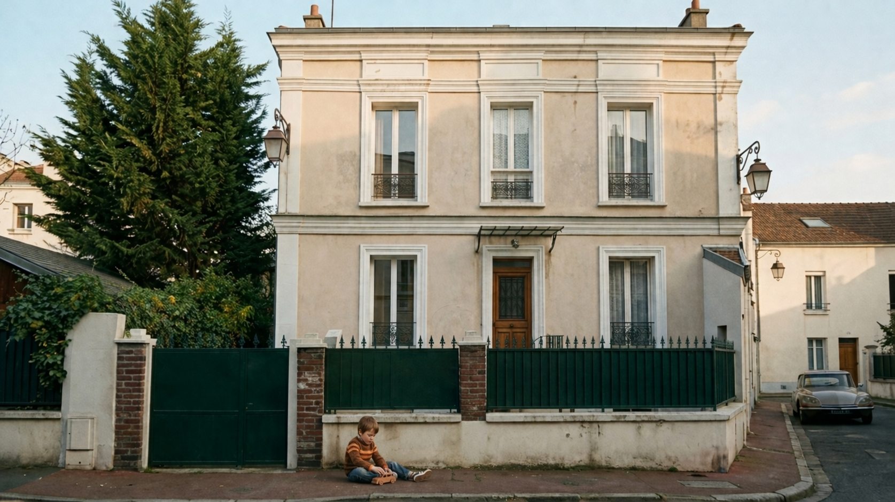
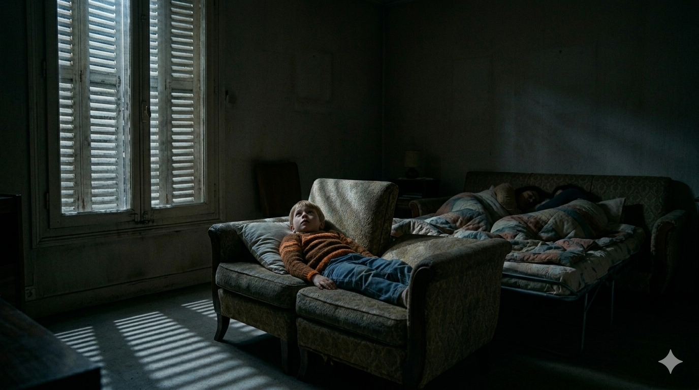
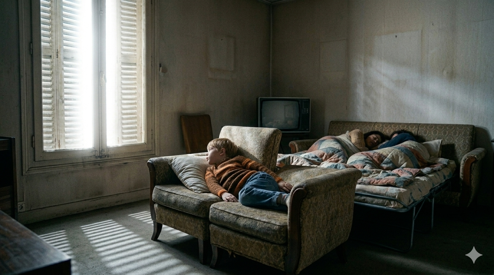
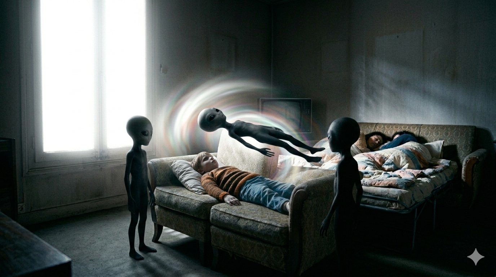
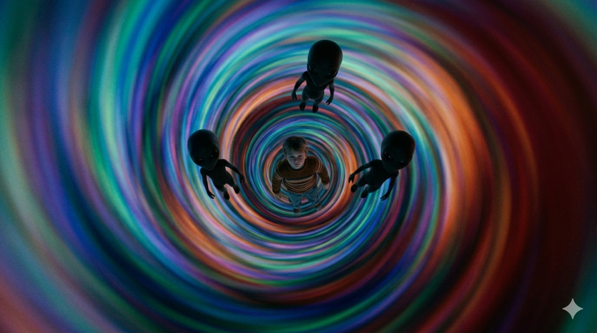
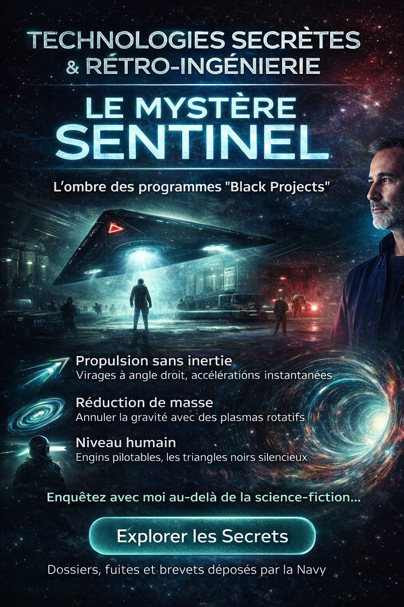
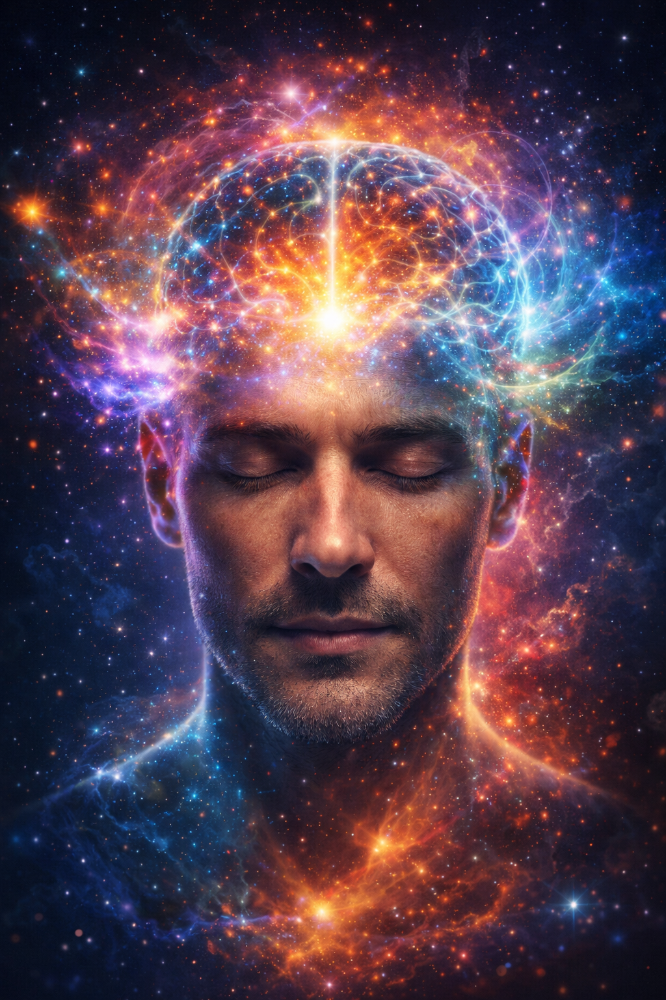

Investigation • Mémoire • Parole Libre
Bienvenue. Mon nom est Michel. Je dédie cet espace à la compréhension des phénomènes qui échappent aux explications conventionnelles, à la mémoire des faits vécus, à la transmission des témoignages et à l’ouverture d’un espace où chacun peut s’exprimer avec respect, prudence et sincérité.
Structurer un espace visuel et narratif pour présenter un témoignage central, recouper des éléments, intégrer d’autres cas et permettre une parole plus libre autour des phénomènes inexpliqués.
Le projet cherche à conserver la mémoire d’un vécu personnel, tout en ouvrant la voie à d’autres récits, observations et analyses, avec prudence et sens de l’écoute.
Cette page a été pensée pour être plus ample et évolutive. Elle rassemble le récit principal, les images clés, les conséquences évoquées, des ressources utiles et un menu permettant d’ajouter progressivement d’autres cas ou témoignages.
Rejoignez la communauté Phenomena :
Accéder au Groupe WhatsAppLes personnes qui souhaitent témoigner de leur expérience peuvent le faire en écrit, audio ou vidéo.
Je peux également être présent pour réaliser une interview. Et si vous préférez rester confidentiel, il est aussi possible d’échanger plus discrètement via WhatsApp, en privé ou dans le groupe.
Avant d’entrer dans la chronologie détaillée, cette introduction situe le cadre : un souvenir d’enfance extrêmement marquant, resté vivant dans ma mémoire, avec des détails précis, des scènes visuelles fortes et des conséquences physiques qui ont renforcé le sentiment qu’il ne s’agissait pas d’un simple rêve ordinaire.

C'est ici que tout a commencé, devant la maison familiale au 7 Avenue Caroline, à Asnières, en 1974. J'étais un enfant de 6 ans, jouant innocemment par terre, dans une atmosphère paisible, sans imaginer qu’un événement allait bouleverser durablement ma perception du réel.
Le but ici n’est pas d’imposer une conclusion, mais de présenter avec précision le déroulement du souvenir, tel qu’il a été retenu, avec ses images, ses sensations, ses ruptures et ses conséquences.

Vers 22h, j'étais totalement éveillé dans mon lit formé par deux fauteuils unis. Nous étions installés en longueur par rapport à la fenêtre. Mes parents dormaient juste à côté ; je pouvais voir le visage de ma maman juste en face de moi, à quelques centimètres.

Soudain, une lumière aveuglante transforme la fenêtre en un mur blanc opaque. Mon corps se fige instantanément, le ventre vers le haut. J'essaie désespérément d'appeler ma maman, mais aucun son ne sort. Seule ma tête peut pivoter légèrement pour la voir dormir, inconsciente du phénomène.

Trois silhouettes d'une taille d'enfant, avec des têtes volumineuses, sont entrées en flottant dans la pièce. Deux m'ont tenu les bras, tandis que la troisième flottait au-dessus de mon torse.
Je ne ressentais pas une peur classique, mais une angoisse profonde liée à mon impuissance, au silence imposé et à l’impossibilité d’alerter mes parents.

Après avoir vu les trois êtres entrer par la fenêtre dans une luminosité aveuglante, à peine deux à trois minutes plus tard, ma vision a été comme absorbée brutalement dans une sorte de tunnel lumineux.
Tout allait à une vitesse extrême, comme si j’étais emporté dans un courant impossible à arrêter. Les couleurs défilaient avec une intensité saisissante, dans une spirale lumineuse qui me donnait la sensation d’être projeté ailleurs.
Cette séquence a marqué une rupture dans l’expérience.
Le réveil fut brusque. Il faisait déjà jour. J'ai crié pour appeler ma maman. Elle s'est réveillée en pensant à un cauchemar, mais en allumant la lumière, le choc fut total : mes taies d'oreiller étaient couvertes de sang.
Ce sang provenait de mon nez. Suite à cette nuit de 1974, j'ai souffert d'hémorragies nasales chroniques jusqu'à l'âge de 18 ans, ce qui a marqué durablement mon esprit.
Lorsque j’ai repris conscience, j’ai eu l’impression que seulement quelques secondes s’étaient écoulées, alors qu’en réalité plusieurs heures avaient passé. Ce décalage temporel a renforcé la singularité de ce souvenir.
Ma mère pensait d’abord qu’il ne s’agissait que d’une simple pesadilla, mais la présence du sang sur l’oreiller donnait à la scène une dimension beaucoup plus troublante.
Cette galerie regroupe les images principales déjà utilisées dans le récit.
Cette section regroupe les nouvelles vidéos, reportages et réflexions ajoutés progressivement au projet Phenomena. L’objectif est de conserver un fil d’actualité clair, structuré et évolutif.
🧠 Ce reportage ancien revient sur des sujets troublants liés aux phénomènes inexpliqués, aux recherches sensibles et aux zones d’ombre entourant certains dossiers scientifiques.
🔍 Il permet d’ouvrir une réflexion prudente sur les liens possibles entre science, secret, conscience et technologies avancées, sans tirer de conclusion définitive.
⏱️ Cette vidéo explore une question profonde : le temps est-il une réalité fondamentale ou une construction liée à notre perception ?
🌌 Entre relativité, mécanique quantique et cosmologie, elle invite à réfléchir à la possibilité que passé, présent et futur soient plus complexes qu’ils ne le paraissent.
🧠 Ce thème rejoint directement le projet Phenomena, notamment autour de la perception du temps, des expériences de rupture temporelle et du rapport entre conscience et réalité.
Consultez l'ensemble des contenus liés au sujet Ovni, témoignages et analyses.
▶ Ouvrir la playlistHypothèses sur l'antigravité et les technologies de rupture.
in Voir la publicationCette vidéo explore les phénomènes OVNI et les crop circles avec une approche ouverte : intelligence inconnue, conscience et perception.
Certains éléments évoqués rappellent fortement des expériences vécues : lumière intense, paralysie, sensation de temps modifié.
Ces observations font écho à l’expérience décrite dans ce projet, notamment le témoignage de 1974.
▶ Voir la vidéo complèteCette section a été conçue pour accueillir progressivement des analyses, rapprochements, documents, observations, témoignages extérieurs, pistes de réflexion et contenus reliés à la conscience, aux technologies avancées et aux grandes questions sur la réalité.
Les thèmes déjà intégrés dans cette zone explorent aussi bien les programmes secrets, la rétro-ingénierie, la visualisation créatrice, que les hypothèses plus profondes sur la simulation du réel et la nature même de la conscience.

Une représentation visuelle des technologies avancées évoquées dans les programmes secrets et les recherches en rétro-ingénierie.
Au-delà des témoignages et des récits personnels, il existe un domaine beaucoup plus discret, presque inaccessible au grand public : celui des programmes à accès spécial, souvent appelés “Black Projects”. Dans cet univers opaque, certains noms circulent de manière récurrente. Parmi eux, le projet “Sentinel”.
S’agit-il d’un simple réseau de surveillance satellitaire ou du nom de code d’une nouvelle génération d’appareils humains défiant les lois de la physique ?
Depuis des décennies, des chercheurs et des lanceurs d’alerte suggèrent que l’humanité tente de reproduire les systèmes de propulsion observés sur les phénomènes non identifiés.
• Propulsion sans inertie : prototypes capables de virages à angle droit ou d’accélérations instantanées.
• Réduction de masse : utilisation possible de plasmas rotatifs pour “annuler” la gravité autour de l’appareil.
• Niveau humain : engins pilotables, souvent décrits comme des triangles noirs silencieux.
Ce qui me frappe dans ces recherches, c’est la corrélation avec ce que j’ai vécu. Le tunnel de couleurs et la vitesse extrême que j’ai ressentie ne sont pas sans rappeler les théories sur la distorsion de l’espace-temps.
Si le projet Sentinel ou ses équivalents cherchent à maîtriser ces forces, ils ne font peut-être que tenter de copier une technologie qui nous a déjà visités il y a bien longtemps, au 7 Avenue Caroline.
Dans cette section “Faits Divers”, nous explorerons les fuites de documents, les brevets déposés par la Navy et les témoignages sur ces prototypes secrets qui surveillent nos cieux sous le nom de “Sentinelles”.

Une technique mentale puissante qui interroge notre rapport à la perception, à l’imaginaire, à la transformation intérieure et à la réalité elle-même.
Dans notre réalité quotidienne, nous avons tendance à croire que tout ce que nous percevons est limité à nos cinq sens… Mais si notre esprit était capable d’aller bien au-delà ? 🤔
La visualisation créatrice est une technique mentale puissante utilisée depuis des décennies, voire des siècles sous différentes formes, pour influencer notre perception, notre état intérieur et parfois même notre réalité.
Elle repose sur un principe fascinant : 👉 ce que l’esprit imagine intensément, le cerveau commence à le considérer comme réel.
Popularisée notamment par Shakti Gawain, la visualisation créatrice consiste à utiliser l’imagination de manière consciente pour : ✨ créer des images mentales précises, ✨ ressentir des émotions associées, ✨ programmer l’esprit vers un objectif ou une transformation.
Aujourd’hui, cette technique est utilisée dans de nombreux domaines : 🎯 sport de haut niveau, 🧠 psychologie, 💼 performance professionnelle, 🧘♂️ méditation et développement personnel.
La visualisation créatrice ne consiste pas simplement à rêver… C’est un processus actif et structuré. Elle peut inclure :
🔹 la projection mentale d’un objectif atteint
🔹 la répétition d’images positives
🔹 l’utilisation d’affirmations
🔹 la création d’un univers intérieur détaillé
Avec le temps, cette pratique peut renforcer la confiance, améliorer la concentration, modifier certains schémas mentaux et influencer la prise de décision.
Ce qui rend ce sujet encore plus fascinant, c’est son lien possible avec certains phénomènes inexpliqués. Certaines personnes ayant vécu des expériences intenses décrivent : 🌈 des tunnels lumineux, ⚡ des sensations de déplacement rapide, 👁️ des états de conscience modifiés, 🌀 une perception du temps altérée.
Cela pose une question profonde : 👉 et si la conscience pouvait accéder à d’autres niveaux de réalité ?
Approfondis ce thème avec ces contenus :
▶ Voir la vidéo YouTubeDepuis toujours, l’être humain tente de comprendre le monde qui l’entoure… Mais une question dérangeante revient de plus en plus dans les recherches modernes : 👉 vivons-nous réellement dans une réalité objective… ou dans une forme de simulation ?
Cette idée, longtemps considérée comme de la science-fiction, est aujourd’hui étudiée sérieusement par des chercheurs, des philosophes… et même des ingénieurs de la Silicon Valley.
Le journaliste et auteur Loïc Hecht, dans son ouvrage “La Simulation, enquête sur la théorie qui fascine la Silicon Valley” (éditions Les Arènes, 384 pages, avril 2026), mène une enquête fascinante sur cette hypothèse.
Son travail explore une idée vertigineuse : 👉 notre univers pourrait être une construction, une simulation avancée, générée par une intelligence inconnue.
Au fil de son enquête, il se confronte à l’un des plus grands mystères : 🧠 la nature de la conscience.
Cette théorie rejoint des réflexions menées par 💻 des ingénieurs en intelligence artificielle, 🧠 des neuroscientifiques et 🌌 des physiciens.
Certains suggèrent que :
• notre réalité pourrait fonctionner comme un système d’information
• notre perception serait une interface
• notre conscience serait une clé d’accès
Certaines expériences humaines décrivent 🌈 des tunnels lumineux, ⚡ des déplacements instantanés, 🌀 des ruptures du temps, 👁️ une conscience détachée du corps.
Ces éléments rappellent fortement une idée : comme si la réalité pouvait changer de niveau ou se reconfigurer.
Ce sujet nous pousse à reconsidérer tout ce que nous croyons savoir : 🧠 notre esprit, 🌌 notre univers, ⚡ notre existence.
Et peut-être que la vraie question n’est pas : “Est-ce réel ?” mais plutôt : 👉 qu’est-ce que le réel, au fond ?